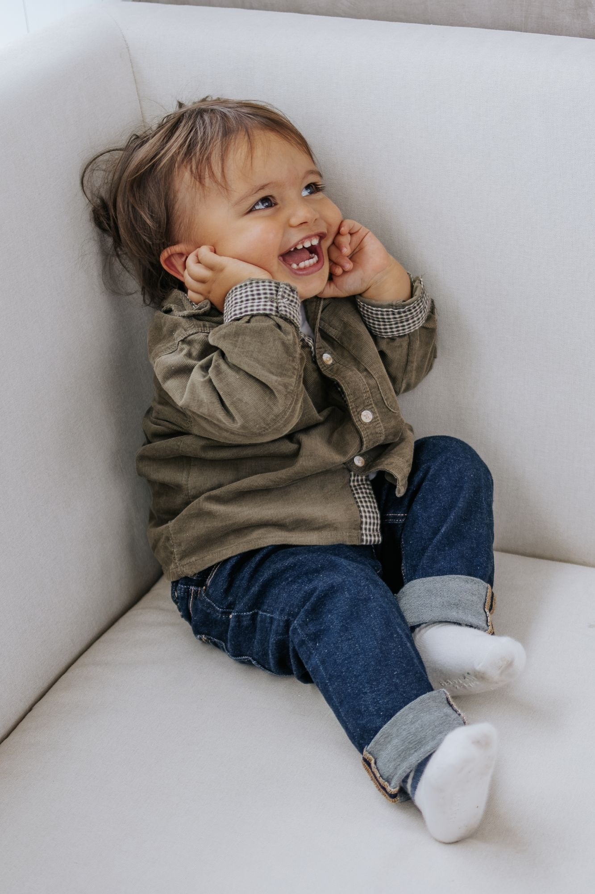
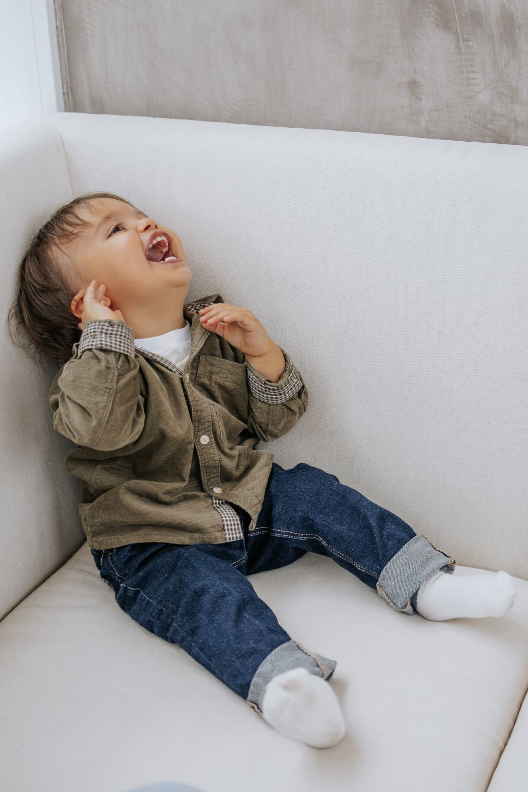
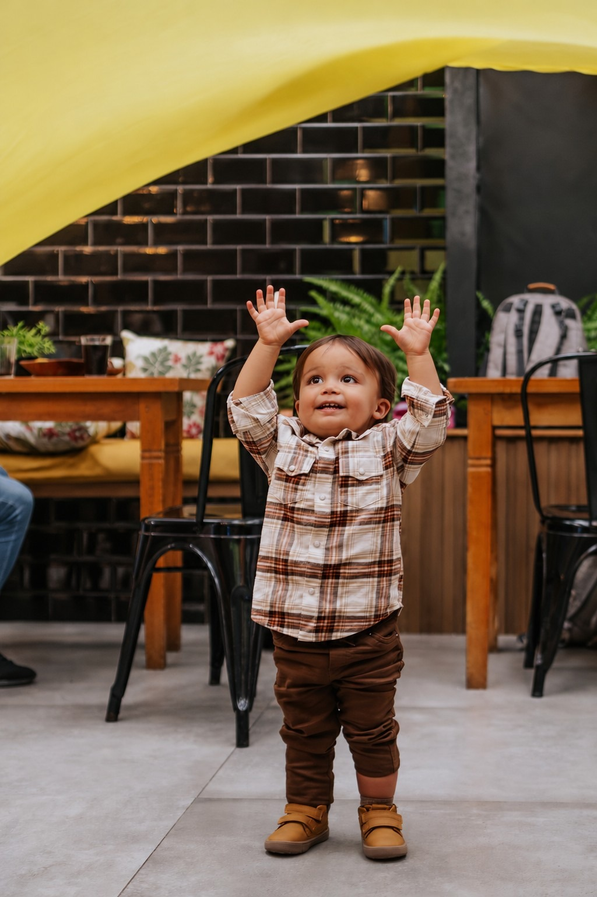
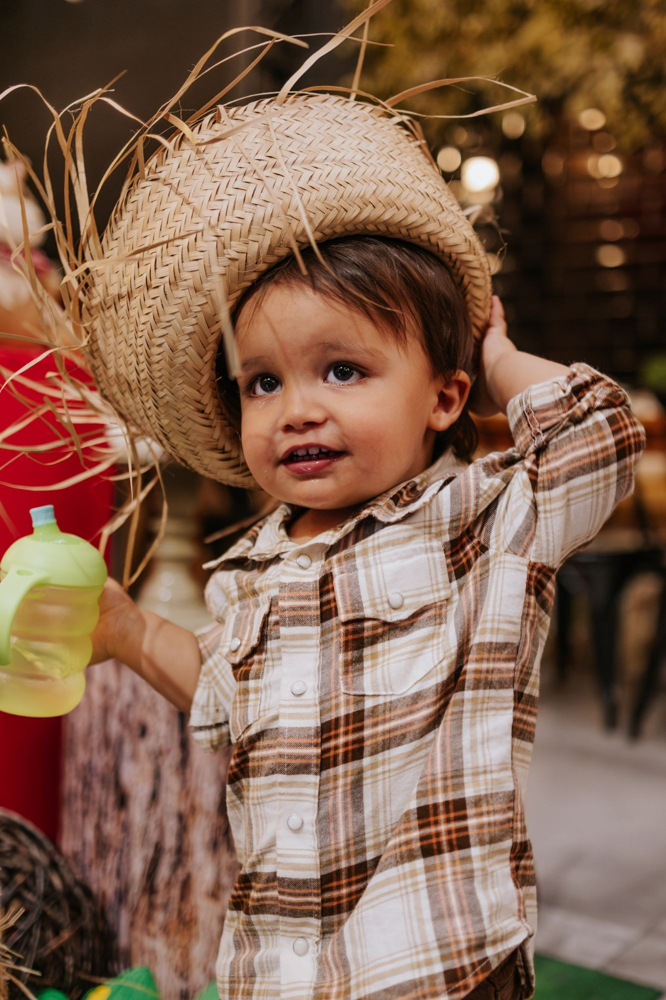
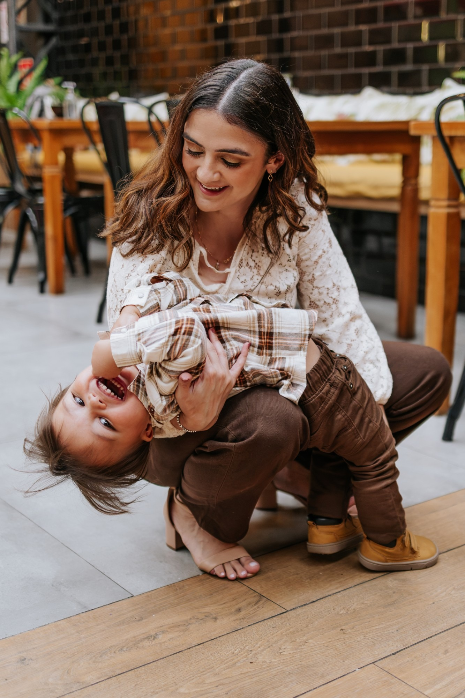

Indicação de mãe pra mãe
(mas eu fotografei ele com o mesmo cuidado do aniversariante)

Na festa do amiguinho
Não só quem está de aniversário.
Depois da festa
2 meses depois…


Na festa dele
Com o mesmo olhar da primeira vez.
De perto, do jeitinho dele.

Já fotografei a festa do seu filho?
Indique pra uma amiga. Quando ela fechar, você ganha uma caixa com 15 fotos impressas 10×15.
Chegou por indicação?
Me manda a data no WhatsApp: (11) 94458-4666